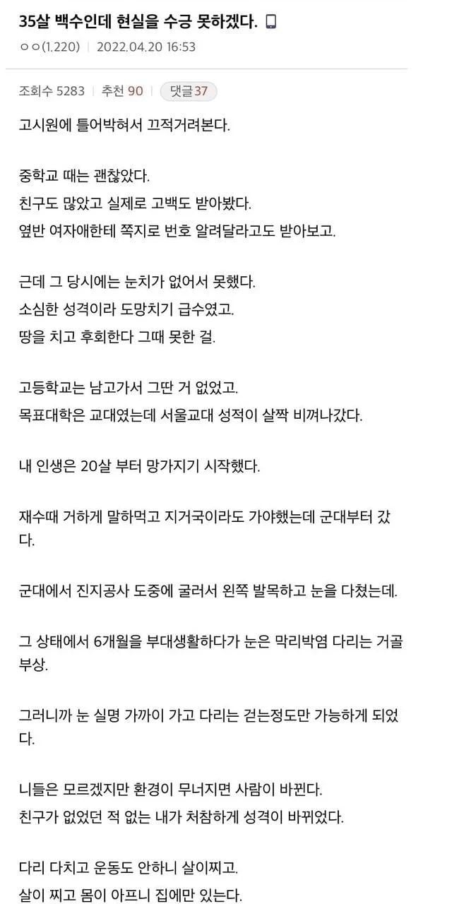
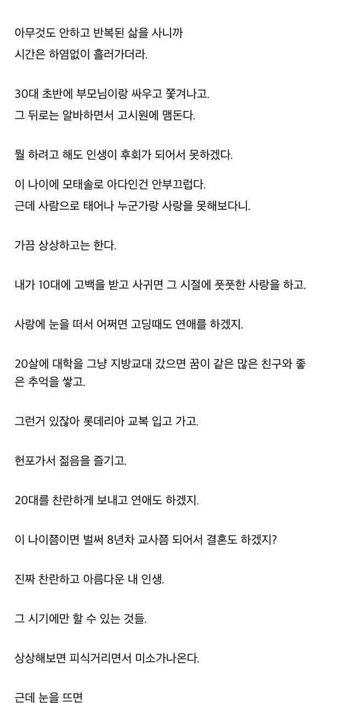
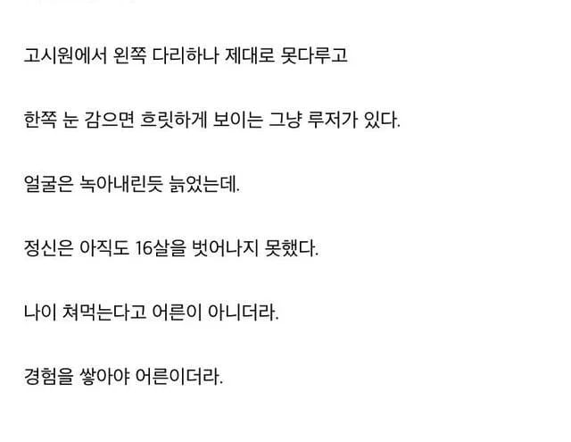

사람이란게 쉽게 망가지는데 좀 떨어졌다고 망했어 하지말고 계속 전진 하면 만회가 가능함.
근데 진짜 망가지는건 난 안돼라는 마인드를 가졌을때부터야
만능발을 봐라 대단한사람이고 귀감이 됨
아직 늦지 않았는데. 인생이 36살이 끝인것도 아니고, 힘내서 살아봐야지. 과거 생각하고 있으면 답이 없지
과거를 후회한다는데 그냥 현재가 편하니 머무를 뿐이다
불행에 깨지는건 매한가지라도 다시 그릇을 크게 만들어서 나가는 사람이 있고 작아진 그릇이라도 만족하는 소인배가 있는 것뿐
장애등급+유공자 확정받고 공공기관/공기업 제한경쟁으로 가면 프리패스인데 지금 마음이 너무 지쳐서 뭐라도 시작이 어려운 상황인듯
현실이 처참하니 좋았던 과거에서 헤어나오지 못하는 거지. 영원히 과거 속에서 살고 있으니 현실은 점점 더 처참해지는 거고.
나도 정신은17살에 멈춰있음 군데어른인척하는거임
몸 망가진게 너무 크다 시벌